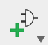
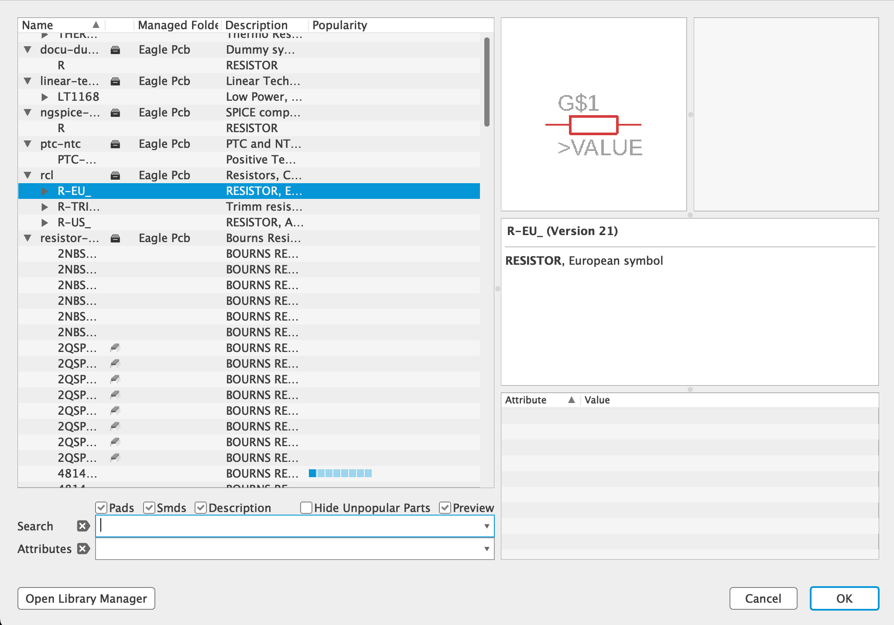

Umiestnenie objektov na plochu
Všetky súčiastky sú uložené v knižniciach súčiastok a tie sú organizované podľa typu súčiastok.
Po kliknutí na ikonu ADD vyhľadáme príslušnú knižnicu a v nej nami požadovanú súčiastku.


Po kliknutí na ikonu ADD vyhľadáme príslušnú knižnicu a v nej nami požadovanú súčiastku.
×

Ak chceme ukončiť nejakú akciu, napr. aj vkladanie súčiastky môžeme použiť klávesu ESC.
Každá súčiastka musí byť presne definovaná menom (NAME) a hodnotou (VALUE).
Pomocou SMASH môžeme ešte u niektorých súčiastok oddeliť meno, resp. hodnotu od súčiastky pre ich čitateľnejšie zobrazenie (vodorovne).
Pomocou SMASH môžeme ešte u niektorých súčiastok oddeliť meno, resp. hodnotu od súčiastky pre ich čitateľnejšie zobrazenie (vodorovne).
Na prepojenie súčiastok používame zásadne ikonu NET (nie WIRE). Prepojenie súčiastok je potrebné vykonávať pravouhlo a hlavne opatrne a ťahať vodič iba k začiatku vývodu ďalšej súčiastky (zväčšiť si lupou), ináč môže dôjsť k nesprávnemu prepojeniu.